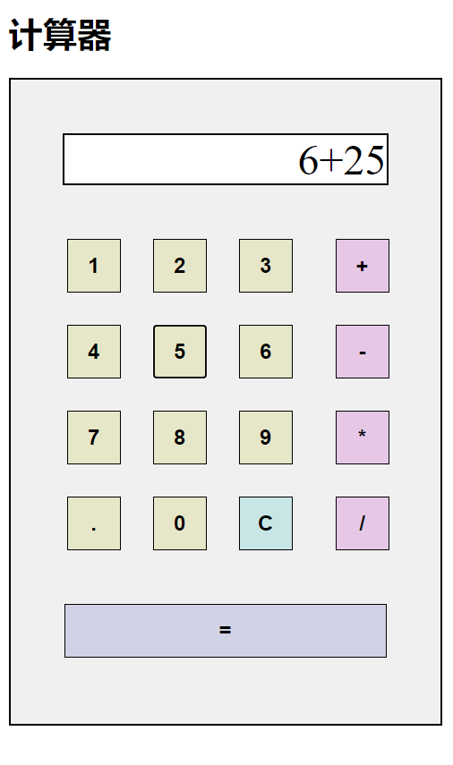
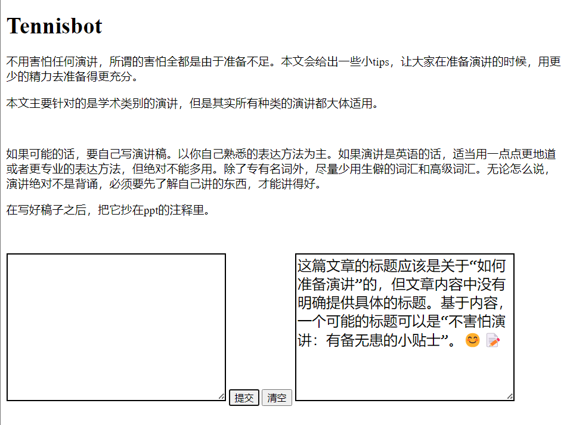

借助ChatGPT，从0开始学一点前端
心血来潮，我打算从0开始，花几天时间，学一点前端知识。
所谓从0开始，其实也有些夸张。我对于前端有一点点了解（否则也不会突然想学这么一个玩意），包括：
前端是用来设计网站的。
- 前端由HTML，CSS，Javascript组成，其中Javascript是一种编程语言。
-
HTML大约长这样：<p class="paragraph">一段话</p>
- 打开chrome浏览器，右键点击网页，选择“检查”，能看到一些前端代码。
- 懂一些编程思路。
仅此而已。
我会通过向ChatGPT（gpt-4）提问的方式学习，我会把每一次与ChatGPT的对话都记录在blog上。
此外，我给本次学习增加一个限制：即，所有知识来源均仅从ChatGPT处获得，我将只点击ChatGPT给出的连接。
看看我们能走到哪一步吧
day1：基础知识
https://chat.openai.com/share/5d19094c-4527-41ef-8866-212e22eb2a0b
我询问的问题有：
什么是前端，什么是html。
html，css，javascript的格式是什么。
怎么在html中用css，怎么在html中用javascript。
day2：做一个计算器
https://chat.openai.com/share/89f34b72-0322-4f38-a67e-6499d868a4c5
我想要一个练手的项目，ChatGPT推荐我做一个网页版计算器。
我询问的问题有：合适的编码平台，如何添加按钮，如何添加按钮功能，如何批量定义按钮，如何计算一个字符串的结果，如何创建一个显示结果的窗口，如何使用css选择器，如何设置按钮样式（包括大小，边框，字符加粗，颜色），如何使用grid排列按钮，如何设置列宽比例，如何用css覆盖之前的样式，如何对结果四舍五入。
在ChatGPT的帮助下，我写出了一个可以正常使用的计算器所需的html，css和js文档。
这是我最终的结果：

ChatGPT在解决简单的问题上完全OK，虽然有时候会比较“健忘”，即，隔了几句话再提之前的问题，它可能就会把之前的问题“忘掉”。
此外，当我问小方面的问题的时候，ChatGPT喜欢迫不及待地把整个解决方案都给我。它别是嫌我学得太慢了吧。
day3：写一个与Tennisbot互动的页面
https://chat.openai.com/share/2eec1650-bec4-4af8-9a65-b3f5dd868c1d
我询问的问题有：如何使用javascript请求某一网址，怎么附加文本内容，怎么使用请求返回的值，怎么创建列表并向列表中添加新的一项，如何使用let和var定义变量，如何创建textarea，如何避免同源策略（CORS）限制，如何定义长字符串，如何提取网页文本信息，如何加密token。
在ChatGPT的帮助下，我写出了一个与Tennisbot（gpt4驱动）交互的页面，可以询问文章的内容，以及给出她自己的评价。
这是我的最终结果：

我向ChatGPT询问的主要是一些细节，因为我之前曾经用python写过如何爬取api等程序。ChatGPT的主要作用是使一个半吊子作品变成成品，而不是从0开始设计代码。它更适合当技术员，而不是设计师。
结论
很可惜的是，通过ChatGPT，只能“横冲直撞”走到这一步了。随着知识点难度的加深，我遇到了一个悖论：如果我问不出有用的问题，那ChatGPT给不出有用的答案，我也就无法继续学习；而如果我的知识水平不够，又问不出有用的问题。这证明了一件事：ChatGPT不能系统地给人讲解知识，不能取代老师。
但是，在有系统的教材的情况下，ChatGPT是最强的答疑助教。所有不懂的问题全部可以问。它不能帮你从0到1，但可以帮你从1到10。
后记
随手打开w3school，或者菜鸟教程，或者随便打开三五个项目，照着上面敲点代码，有问题就问ChatGPT。这样学的是最快的，照着教程完成一个项目的成就感也是最足的。